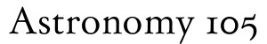

Here are the slides that I use in lectures. there are no captions so they may not make much sense unless you have been to class.
Week 1
Why Go?
PDF
Moon Ages
PDF
Physics
PDF
Week 2
Rockets
PDF
Pre Apollo
PDF
Landing Site Selection
PDF
Week 3
Holiday
Early Apollo
PDF
Spider
[IMDB]
Week 4
Apollo 11 Part I
PDF
Apollo 11 Part II
PDF
One Small Step - Part I
- Part II
Week 5
Apollo 12 Part I
PDF
Apollo 12 Part II
PDF
Is That All There Is?
[IMDB]
Week 6
Apollo 13
PDF
Apollo 14 Part I
PDF
Apollo 14 Part II
PDF
Week 7
Apollo 15 Part I
PDF
Apollo 15 Part II
PDF
For All Mankind
[IMDB]
Week 8
Holiday
Apollo 16 Part I
PDF
Apollo 16 Part II
PDF
Week 9
Apollo 17 Part I
PDF
Apollo 17 Part II
PDF
Shadow of the Moon
[IMDB]
Week 10
USSR Missions
PDF
Why Return?
PDF
Final
Department of Astronomy
University of Washington
This page is brought to you by
Toby Smili
Last modified: Fri Dec 17 10:07:59 PST 2010